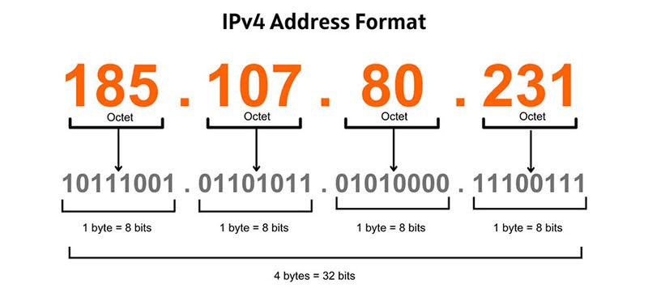
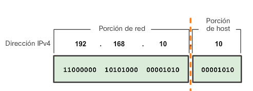
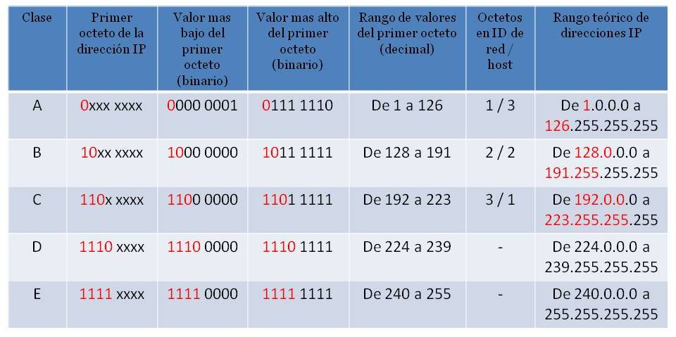

Dirección IP, estructura y clases
Cuando enviamos una carta necesitamos poner la dirección del destinatario en el sobre. Sin esa dirección, el cartero no sabe a quién entregarla. En una red informática ocurre exactamente lo mismo: cada dispositivo necesita una dirección única que lo identifique para que los datos puedan llegar a él y solo a él. Esa dirección es la dirección IP (Internet Protocol address).
La dirección IP es el mecanismo de direccionamiento de la capa 3 (capa de red) del modelo OSI. Mientras la dirección MAC identifica físicamente una tarjeta de red (y no cambia), la dirección IP es una dirección lógica que se asigna al dispositivo y puede cambiar según la red a la que esté conectado. Un portátil que en casa tiene la IP 192.168.1.50 tendrá una IP completamente diferente cuando se conecte a la red del instituto.
Estructura de una dirección IPv4
La versión más extendida del protocolo IP es IPv4, que usa direcciones de 32 bits. Para hacerlas legibles, esos 32 bits se dividen en 4 grupos de 8 bits (llamados octetos), separados por puntos y representados en decimal:


Por ejemplo, la dirección 192.168.1.100 en binario es:
Cada octeto puede tomar valores del 0 al 255 (2⁸ = 256 posibles valores). Esto da un total de 2³² = 4.294.967.296 direcciones IPv4 posibles, que parecen muchas pero resultaron insuficientes para el número de dispositivos conectados a internet hoy en día (razón por la que existe IPv6, que veremos al final de la unidad).
Un octeto siempre vale entre 0 y 255
Una dirección como 192.168.300.1 no es válida: el tercer octeto (300) supera el máximo de 255. Si ves una dirección con algún octeto mayor de 255, es un error.
Partes de una dirección IP: red y host
Una dirección IPv4 no es simplemente un número de 32 bits: está dividida en dos partes con significados distintos:
- Parte de red (network): identifica la red a la que pertenece el dispositivo. Todos los dispositivos de la misma red comparten la misma parte de red.
- Parte de host: identifica el dispositivo concreto dentro de esa red. Debe ser único dentro de la red.


¿Cuántos bits corresponden a la red y cuántos al host? Eso lo determina la máscara de subred, que veremos en el siguiente punto. Primero necesitamos entender las clases de red, que fueron la primera forma de definir esta división.
Clases de red
En los primeros años de internet se definieron las clases de red como forma de estructurar el espacio de direcciones IPv4. Cada clase asigna un número fijo de bits a la parte de red y el resto al host.


Clase A
Las redes de clase A usan el primer octeto para identificar la red y los tres restantes para los hosts. El primer bit siempre es 0, lo que limita el primer octeto al rango 1-126.
- Rango:
1.0.0.0–126.255.255.255 - Bits de red / host: 8 / 24
- Número de redes posibles: 126 redes (2⁷ - 2)
- Hosts por red: 16.777.214 (2²⁴ - 2)
- Máscara por defecto:
255.0.0.0(/8)
Una red de clase A puede albergar más de 16 millones de dispositivos. Fueron asignadas a grandes organizaciones e ISPs en los primeros tiempos de internet. Actualmente están casi todas asignadas.
¿Por qué se resta 2 a los hosts?
En cualquier red siempre se reservan dos direcciones que no se pueden asignar a dispositivos:
- La dirección de red (todos los bits de host a 0): identifica la red en sí. Ej: 10.0.0.0
- La dirección de broadcast (todos los bits de host a 1): se usa para enviar un mensaje a todos los dispositivos de la red. Ej: 10.255.255.255
Por eso el número de hosts utilizables siempre es el total menos 2.
Clase B
Las redes de clase B usan los dos primeros octetos para la red y los dos últimos para los hosts. Los dos primeros bits son siempre 10.
- Rango:
128.0.0.0–191.255.255.255 - Bits de red / host: 16 / 16
- Número de redes posibles: 16.384 (2¹⁴)
- Hosts por red: 65.534 (2¹⁶ - 2)
- Máscara por defecto:
255.255.0.0(/16)
Las redes de clase B fueron asignadas a universidades, empresas medianas y administraciones públicas.
Clase C
Las redes de clase C usan los tres primeros octetos para la red y solo el último para los hosts. Los tres primeros bits son siempre 110.
- Rango:
192.0.0.0–223.255.255.255 - Bits de red / host: 24 / 8
- Número de redes posibles: 2.097.152 (2²¹)
- Hosts por red: 254 (2⁸ - 2)
- Máscara por defecto:
255.255.255.0(/24)
Es la clase más común en redes locales pequeñas y medianas. Con 254 hosts por red es suficiente para la mayoría de oficinas y hogares.
Clase D y Clase E
Clase D (224.0.0.0 – 239.255.255.255): reservada para multicast — comunicaciones de uno a muchos donde un paquete se envía a un grupo de receptores simultáneamente. No se usa para direccionar hosts individuales.
Clase E (240.0.0.0 – 255.255.255.255): reservada para uso experimental e investigación. No se usa en redes de producción.
Resumen de clases
| Clase | Primer octeto | Máscara por defecto | Hosts por red | Uso |
|---|---|---|---|---|
| A | 1 – 126 | 255.0.0.0 (/8) | 16.777.214 | Grandes redes, ISPs |
| B | 128 – 191 | 255.255.0.0 (/16) | 65.534 | Universidades, empresas medianas |
| C | 192 – 223 | 255.255.255.0 (/24) | 254 | Redes pequeñas y medianas |
| D | 224 – 239 | — | — | Multicast |
| E | 240 – 255 | — | — | Experimental |
La dirección 127.x.x.x: el loopback
El rango 127.0.0.0 – 127.255.255.255 está reservado para el loopback — comunicación interna del propio equipo consigo mismo. La dirección 127.0.0.1 es especialmente conocida: cuando haces ping 127.0.0.1, estás comprobando que la pila TCP/IP del propio equipo funciona correctamente, sin enviar nada a la red. En desarrollo web, el servidor local suele estar en http://127.0.0.1 o su alias http://localhost.
El problema del desperdicio de direcciones
El sistema de clases tuvo un problema fundamental desde el principio: el desperdicio masivo de direcciones. Si una empresa necesitaba 500 hosts, no le bastaba una red de clase C (254 hosts) pero una red de clase B (65.534 hosts) era enormemente grande para sus necesidades reales — los 65.034 hosts sobrantes quedaban inutilizados.
Este problema llevó al desarrollo del subnetting (división de redes en subredes) y del CIDR (Classless Inter-Domain Routing), que permiten usar máscaras de cualquier longitud en lugar de estar limitados a /8, /16 o /24. Lo veremos en el punto 3.
Ejemplo del desperdicio de clases
Una empresa tiene 300 equipos. Sus opciones con el sistema de clases son:
- Clase C (/24): 254 hosts → no alcanza
- Clase B (/16): 65.534 hosts → alcanza, pero 65.234 direcciones desperdiciadas
Con CIDR y subnetting, podría usar una red /23 que da exactamente 510 hosts utilizables — justo lo que necesita con algo de margen. Veremos cómo calcular esto en el punto 4.
Actividad en clase
🖥️ Actividad conjunta: identifica la clase de estas IPs
Para cada dirección IP, indica: la clase a la que pertenece, si podría ser una dirección de host válida, y la máscara de red por defecto.
| Dirección IP | ¿Clase? | ¿Host válido? | Máscara por defecto |
|---|---|---|---|
10.0.0.1 |
|||
172.16.5.200 |
|||
192.168.1.1 |
|||
127.0.0.1 |
|||
224.0.0.5 |
|||
8.8.8.8 |
|||
200.100.50.25 |
|||
255.255.255.0 |
Solución
| Dirección IP | Clase | Host válido | Máscara |
|---|---|---|---|
10.0.0.1 |
A | ✅ Sí | 255.0.0.0 /8 |
172.16.5.200 |
B | ✅ Sí | 255.255.0.0 /16 |
192.168.1.1 |
C | ✅ Sí | 255.255.255.0 /24 |
127.0.0.1 |
A* | ❌ No (loopback) | — |
224.0.0.5 |
D | ❌ No (multicast) | — |
8.8.8.8 |
A | ✅ Sí (IP pública Google DNS) | 255.0.0.0 /8 |
200.100.50.25 |
C | ✅ Sí | 255.255.255.0 /24 |
255.255.255.0 |
E* | ❌ No (es una máscara, no una IP de host) | — |
*127.x.x.x técnicamente es clase A pero está reservado. 255.x.x.x es clase E pero 255.255.255.0 es una máscara, no una dirección de host.